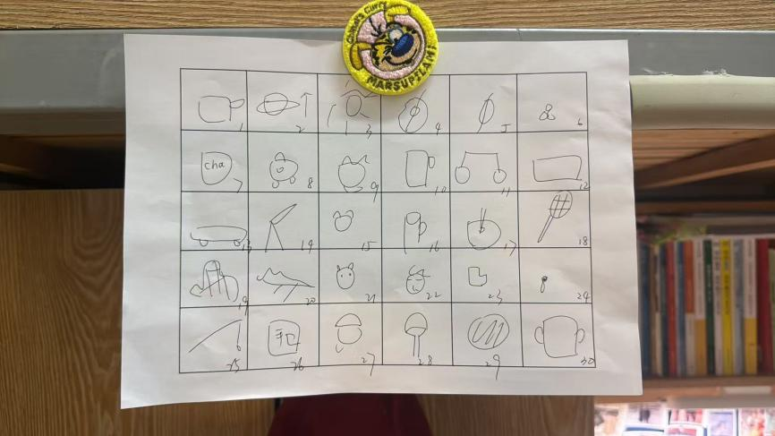
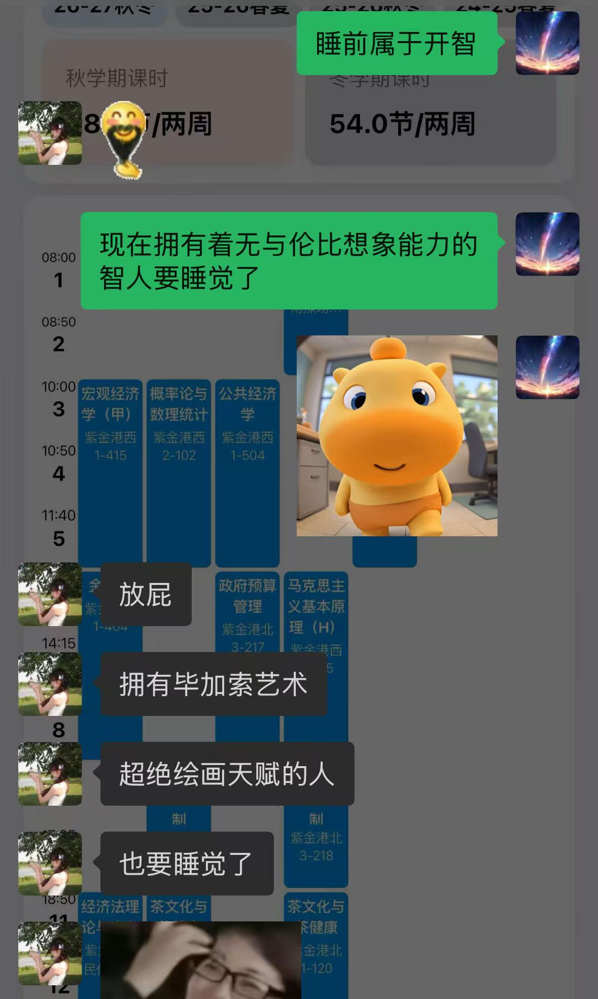
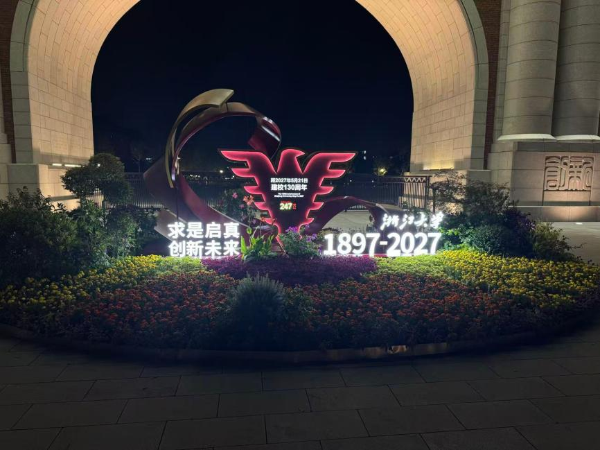
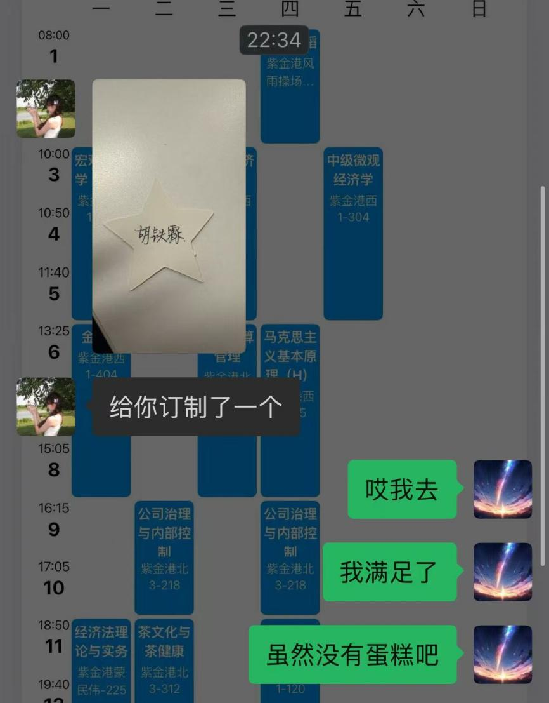
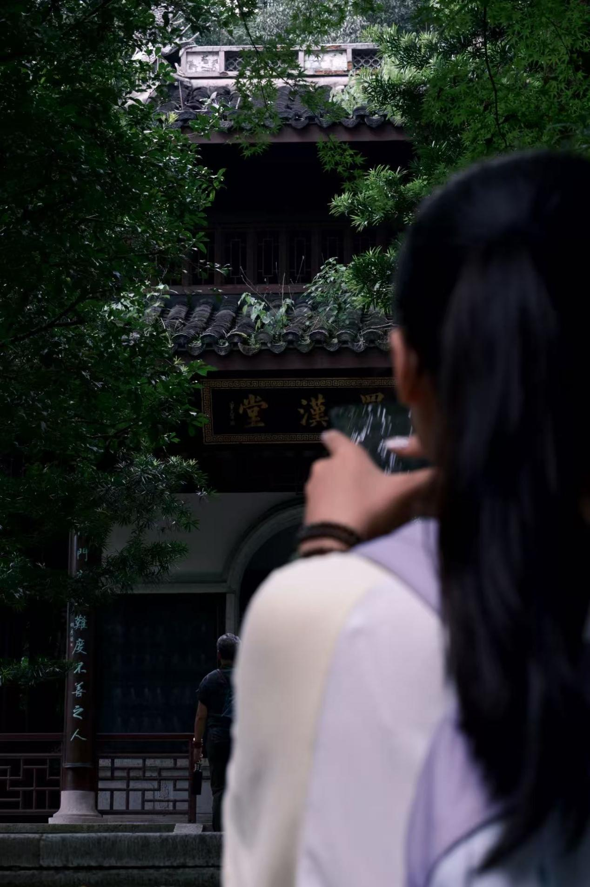
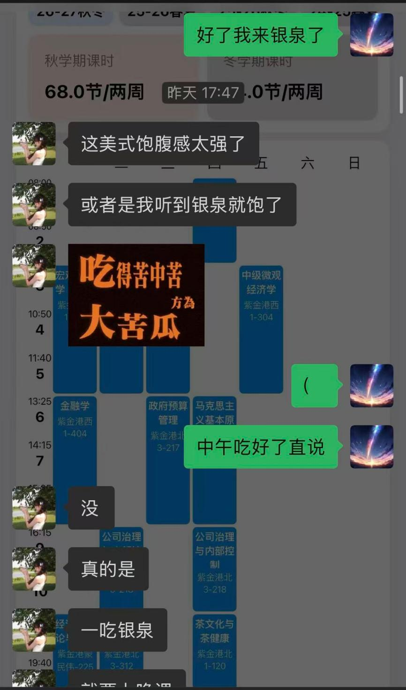
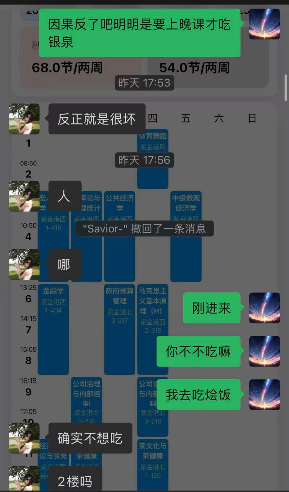
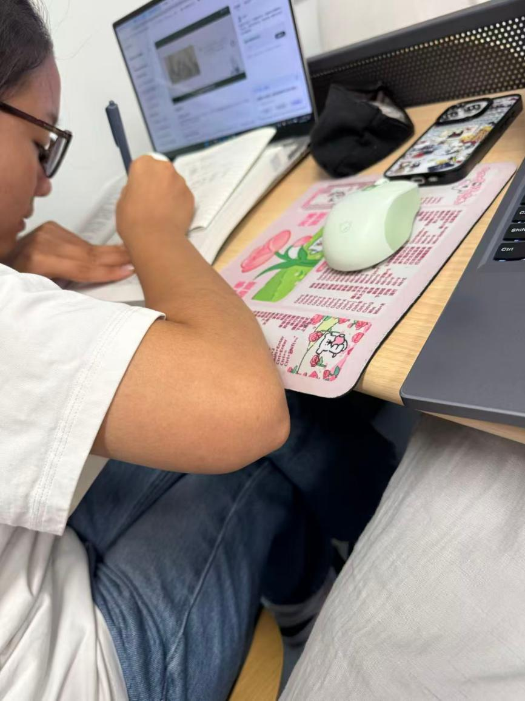
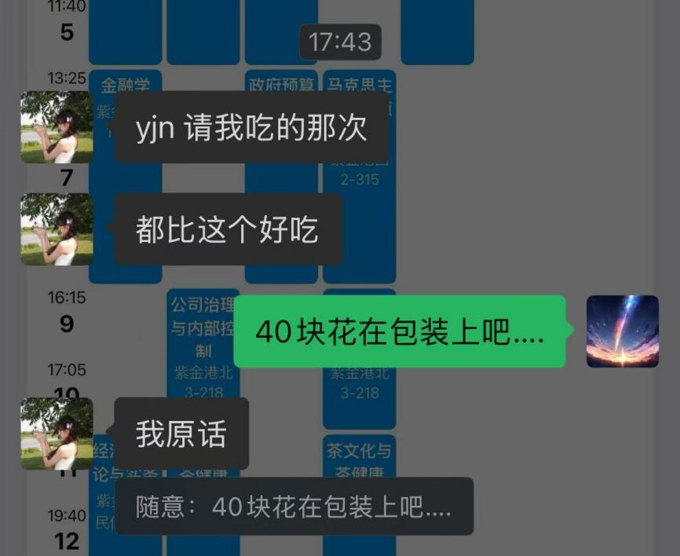

17:00
突然发了首孙燕姿的《遇见》。
不会联系上下文的我去看了歌词，心弦触动下，我说：
要不要来银泉，
和我遇见遇见？
也不知道哪来那么大的胆子。
17:12
下雨了，带伞没？
没带的话我可得英雄登场了。
OK，英雄登场！
我去，居然还是翘了室友的邀约来吃的饭。🥹🥹
这速选吃得太寒酸了。
下回重新来过，不能算第一次吃。
（所以今天这顿算我的~）
PRIVATE OBSERVATION LOG · 09.11—09.26
一些被记住的瞬间，
和一句想要认真问你的话。
前言
PREFACE
写在故事开始之前
其实也不知道怎么聊起来的
但就是相谈甚欢
于是有一天被划过心头的悸动触动
在备忘录里新建了笔记
标题叫《探班大明星》
—— 题记
17:00
突然发了首孙燕姿的《遇见》。
不会联系上下文的我去看了歌词，心弦触动下，我说：
要不要来银泉，
和我遇见遇见？
也不知道哪来那么大的胆子。
17:12
下雨了，带伞没？
没带的话我可得英雄登场了。
OK，英雄登场！
我去，居然还是翘了室友的邀约来吃的饭。🥹🥹
这速选吃得太寒酸了。
下回重新来过，不能算第一次吃。
（所以今天这顿算我的~）
晚上坐了后座。
头发丝拂过，带着茉莉的香气，
在心里荡起涟漪。
不过夜宵坐了斜对角，学生会的话题我也有点融入不进。
出去吹吹风，闷闷不乐中。
固执点掉小红点、无法容忍的俩人。
甚至连短信都要删掉吗……
拒绝小红点。
没有不保持界面干净的义务！
约打卡，没蹭上车。
不过第一次打卡，还陪我走到 3 km。
开心呀。
💤


下午 zx 请饭，遂银泉坐卡，顺手发出邀请。
结果突然就出现在我面前了。
抱着腿在旁边晃呀晃——可爱呀。
带了杯瑞幸，哎呦还自己付钱。本来想让你报你要喝啥的。
（OK，9.24 已请。）
想着光送个外卖有点太没意思了，于是叫下来散步。
（不过散得有点久、有点远了吧，我真的很抱歉 qwq）
自南二门而西，再右拐；
桥上下旋梯而东，直抵南大门，上行；
为寻水杯旁行医学院，复回玉湖。
今晚甚能走矣！

晚上文艺破冰。
顺便给我定制个蛋糕牌。

中午蹭车回玉湖。
本来想邀去堕落街，但是中午要打印资料。
实则发现不需要打这么全吧……hhh，可怜小 tx。
11:30
汇报完文献，策划今日出游可能中。
本来以为宣讲团是下午破冰、海底捞是晚饭，结果突然知道是中午。下午你说不想接着参加。
我说 OK 啊，
跟我去虎跑吧。
虎跑中，走走停停拍拍照。
喜欢看我拍照吗？
每次我举起摄像机的时候，头就凑过来搁在我的肩膀上。
一颗心扑通扑通地跳～～
晚上被室友拉去吃饭。
我说，那可欠我一顿饭咯。
（就在今天！！）

没见面的一天。
好像逐渐习惯了每天都能见一面的状态。
突然一天没见到，心里还有点不开心呢。
奇怪的滋味。
想念中。
又是周一啦。
约打卡，吃饭。
平平淡淡的幸福吧。
下午做完实验结束的早
先问要不要瑞幸
下午喝过了
再说我要来银泉了
好像还不饿，
听到银泉就饱了
sad
依旧前往银泉吃烩饭
刚到银泉停下车
人
哪
一激灵
这个小 tx
真的很难不感动吧！
18:50 · 上晚课中
小 tx 写作业这么认真。回答一个随堂小测居然不用 AI。不是，真的好厉害吧。我第一次见到有了 AI 之后，这种签到性质的小测还自己一个个写的。
（srds 放一个偷拍，勿打我 orz）
手机翻盖的自习模式吗？
好巧啊，我也这样。



另外，今天是谢老师报销小课堂开课之日。
值得纪念。

带了一杯亲自品鉴的秋山楂茉莉冰奶。
音乐节听得很欢。
夜宵的时候
把我的手环撕了半天才撕下来
边聊天边在我的衣服上贴上贴下
可爱呀。
一天天吃 Brunner 成何体统！
这不好呀！
认可睡觉。
礼求原图。
大明星依旧光彩夺目呀。
20:30
开始整理观察日志中……
THE LAST PAGE
亲爱的大明星
伟大的毕加索女士
掌管报销小课堂的谢老师
勤勤恳恳乖巧的小 tx
最终提问 / FINAL QUESTION
当前为版式预览，答案暂不会上传。